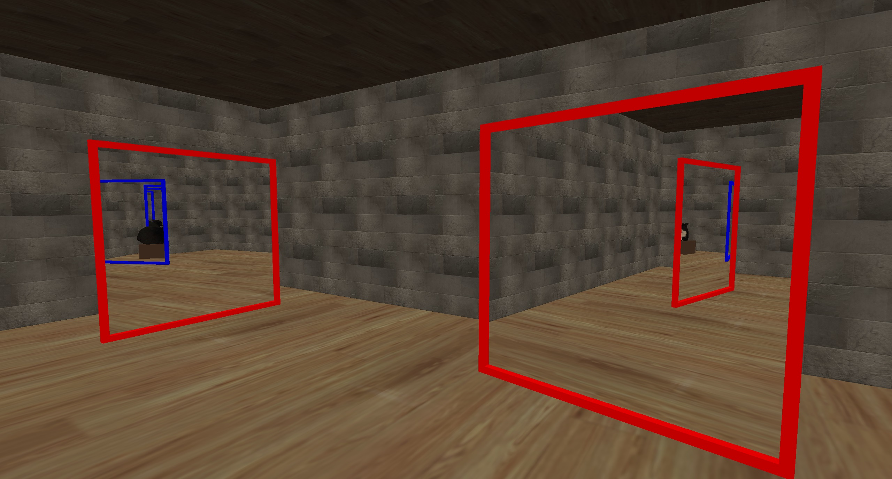
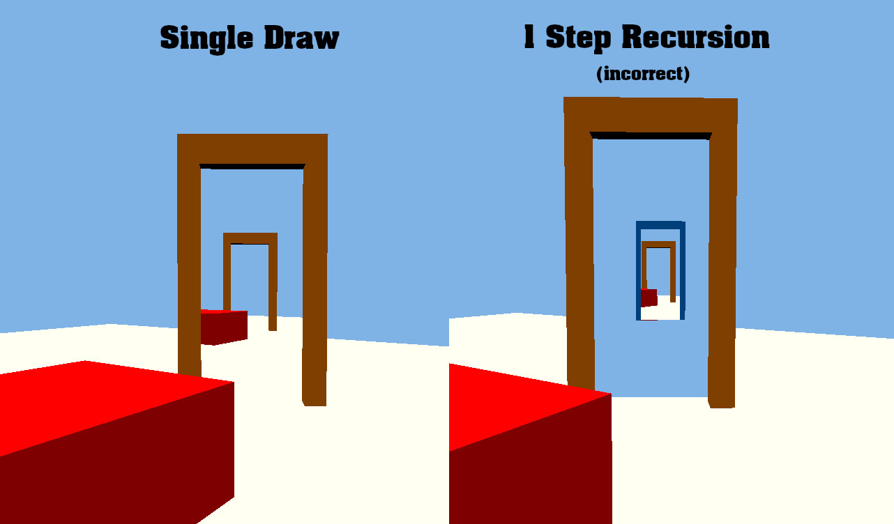
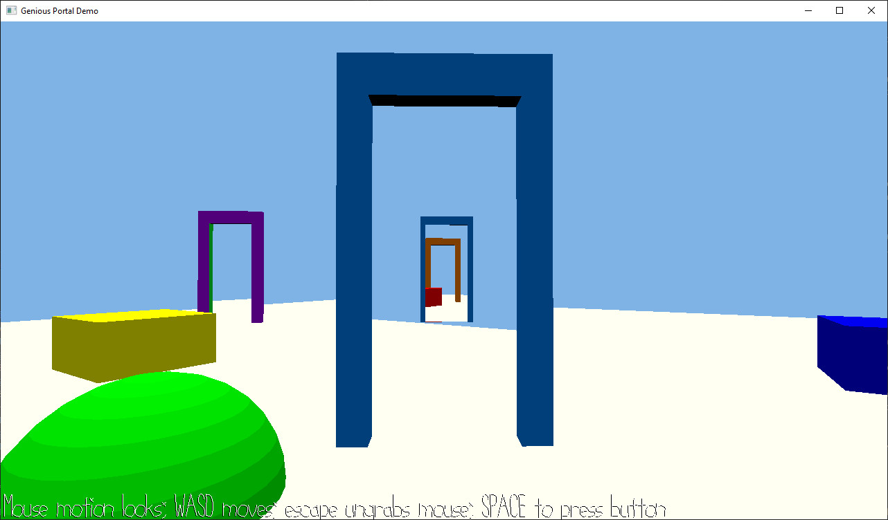

Andrew Knowles
Discrete Math and Game Design Student @ CMU
Discrete Math and Game Design Student @ CMU
Seamless portals which appear within other portals, using C++ and OpenGL.
Developed as a key mechanic for my final project in
CMU's 15-466: Computer Game Programming course.
For my final project in Computer Game Programming, my group and I decided to focus on using portals to create non-Euclidean spaces. This page describes my custom implementation in OpenGL, designed to support many sets of seamless, recursive portals. For information about the actual game we made, click here.
The implementation supports up to 255 levels of recursion, for any amount of portals, and is reasonably performant on weak hardware (though there is room for improvement, such as more advanced culling).
Going into this project I wasn't very comfortable working with the stencil buffer. Actually, I wasn't super comfortable with OpenGL in general. My previous projects in the course got a lot of mileage out of the professor's starter code for the renderer as I wasn't doing much that was interesting graphically, instead focusing on gameplay mechanics. This made portals seem like a pretty difficult choice for a final project, but I knew I would at least learn a good amount.
My first thought was to use framebuffers to render a camera view into a texture, something I was familiar with doing in game engines in the past. However, I somehow stumbled upon the idea of using stencil buffers, which was preferable for a couple of reasons:
My mind was fully set when I found a nice article by Thomas Rinsma describing his own implementation of recursive stencil buffer-based portals. I decided that I would start with implementing single portal rendering with functionality, and then adapt Thomas's method in my codebase.
Getting one portal to work was pretty straightforward. I gave the portal (and its destination) a local camera which would update position each frame, and I rendered the portal meshes into the stencil buffer, followed by their cameras' views into the depth/color buffer, and then finally the player camera as usual. For teleportation I basically checked if the player crossed the portal's XZ plane while within the mesh's bounding box, using some simple matrix math with the help of Sebastian Lague.
The trickiest part of this was clipping objects rendered through portals to the actual portal's plane: by default, an object behind portal B could be visible when looking through portal A, out B's front side.
Notice in the image how the red cube is visible within the blue portal, even though it is on the back side of the orange portal. Luckily this is easily fixed in OpenGL by setting glClipPlanes[0] in the meshes' shaders.
With that, single portal rendering was done, and I could move on to implementing Thomas's solution for recursion.
This wasn't trivial, as I was still getting into the recursive mindset- for example, I started off with a Portal struct which had a Camera member, but I started to realize that recursion would only work if view matrices were calculated at each depth rather than once per frame, since the same portal would effectively need to be viewed from multiple perspectives.
Even with that fixed, though, I found that my adaptation of Thomas's solution didn't work nicely with multiple sets of portals. In particular, portals were not able to correctly occlude each other.
I realized that I needed to store depth information from each portal at the same recursive layer in order to allow later-drawn portals to be occluded if necessary. The current implementation sometimes called glClear(GL_DEPTH_BUFFER_BIT), which didn't support conditional operation based on stencil buffer value. Therefore I opted to replace these calls with drawing a fullscreen triangle at max depth, which was compatible with the stencil test.
The rest of my implementation simply follows from making that adjustment work, so let's now take a look at the algorithm.

I'm quite pleased with these portals and I'm glad I got them working in time for our final project. I feel much more comfortable with OpenGL and graphics in general after spending hours debugging in RenderDoc. I'd like to revisit this project when I have more time and improve culling to see how fast I can get everything, and I'd also like to try working with a physics engine of some kind rather than deferring to a walkmesh system.
If you'd like to learn about the game this project was part of, click here, or view my source code here.